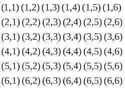

Sou uma pessoa que não é boa em definir algo, então vou tentar definir com as minhas palavras mesmo,
a probabilidade por definição é a possibilidade de algo acontecer, por exemplo, se eu jogar um dado
tem 50% de cair cara e 50% de cair coroa.
Eu achei um conteúdo fácil, mas oque complica é a falta de entendimento das questões, é um
conteúdo que qualquer pessoa consegue entender, mas com as questões impostas durante a matéria,
dificulta muito.
É o conjunto dos resultados possiveis em um evento aleatório, ele é declarado com um "U" ex :
Em uma jogada de um dado, seu espaço amostral é :
U = {1,2,3,4,5,6}
Já um evento, é um subproduto do espaço amostral, por exemplo cair um numero ímpar na jogada de um dado.
A = {1,3,5}, n(a) = 3
E para finalizar espaço amostral, uma dificuldade que pode traumatizar pessoas desatentas :
Espaço amostral de dois dados, um vermelho e outro branco :

n(u) = 36
Como são dois dados,então há chances a mais, pode cair em um dos dados o numero 4 e no outro 3, ou
em um 1, e no outro 3, são 6x6 o espaço amostral deles.
p(A) = n° de casos favoráveis / n° de casos possiveis ou :
P(A) = n(A)
n(Ω)
EX : Determinar a probabilidade de tirarmos uma bola branca em uma urna com 10 bolas brancas e 20 bolas vermelhas.
Casos favoráveis → 10 (bolas brancas)
Casos possíveis → 10 + 20 (bolas brancas + bolas vermelhas)
P(A) = 10 / 3
P(A) = 1 / 3
P(A) = 0,33333...
P(A) = 33,3333...%
Chamamos de probabilidade condicional quando queremos calcular a probabilidade de
um evento A acontecer depois de já ter acontecido o evento B.
Com o símbolo p(A|B)
indicamos a probabilidade de A dado que B ocorreu.
Quando calculamos p(A|B), tudo se passa como se B fosse um novo espaço amostral “reduzido”
dentro do qual queremos calcular a probabilidade de A.
Temos duas formas de calcular p(A|B) :
1° forma : Considerando a probabilidade de A em relação ao espaço amostral do B.
2° forma : Usando a fórmula:
P(A|B) = p(A∩B)
p(B)
Lembrando : Exestem eventos complementares que são formados pelo inverso dos resultados de outro evento.
Ou seja, dado um evento A, o evento complementar de A será um evento composto de tudo o que não é A.
ou seja : P(A) + P('A) = 1
"(Enem) O diretor de um colégio leu numa revista que os pés das mulheres
estavam aumentando. Há alguns anos, a média do tamanho dos calçados das mulheres era de 35,5, e,
hoje, é de 37,0. Embora não fosse uma informação científica, ele ficou curioso e fez uma pesquisa
com as funcionárias do seu colégio, obtendo o quadro a seguir:"
| N° dos calçados | N° de funcionárias |
| 39 | 1 |
| 38 | 10 |
| 37 | 3 |
| 36 | 5 |
| 35 | 6 |
Probabilidade A = Calçar 38
Probabilidade B = calçar mais que 36
A∩B → A intersecção
é o conjunto formado pelas pessoas que calçam mais que 36 e que calçam 38, logo, ele é formado
pelas 10 funcionárias que calçam 38.
n(B) = 3 + 10 + 1 = 14
n(A∩B) = 10
P(A|B) = 10 / 14
P(A|B) = 5 / 7